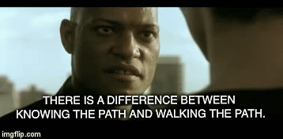
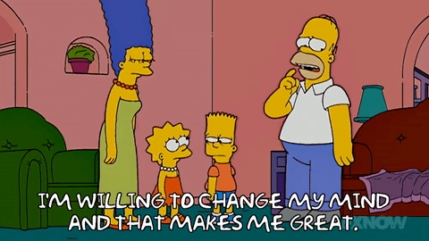

I focus on systems, strategy, and scale.
My work goes beyond designing individual features. I specialize in enterprise-scale modernization by establishing a clear vision and driving the cross-functional consensus required to ship it. I thrive when I can dive into ambiguous, messy requirements and extract a cohesive product strategy that balances technical feasibility with human-centered principles.
My goal is to act as a multiplier for the design practice. Whether I am architecting a new design system, mentoring fellow designers, or establishing better cross-functional processes, I bring a balance of strategic vision and hands-on craft to ensure teams deliver scalable, high-impact results.
How I like to get things done.
These principles shape how I collaborate, make decisions, and approach challenges. If you find yourself nodding along, we’ll get along just fine.

Lead by example.
Real leadership is founded upon trust, and actions speak louder than slide decks.
Align first, design second.
A beautiful interface is useless if engineering can't build it or the business doesn't need it.
Do less, not more.
I don't just want to solve the immediate problem. I look for patterns to build scalable foundations that accelerate future work.

Hold opinions loosely.
Changing your opinion is just a sign that you've learned something new.
Embrace the chaos.
Enterprise problems are rarely neat. I thrive on turning complex, ambiguous requirements into a clear, actionable product vision.
Have fun doing it.
We've got plenty of years before retirement. It’s worth finding the humor, the wins, and the moments worth remembering.